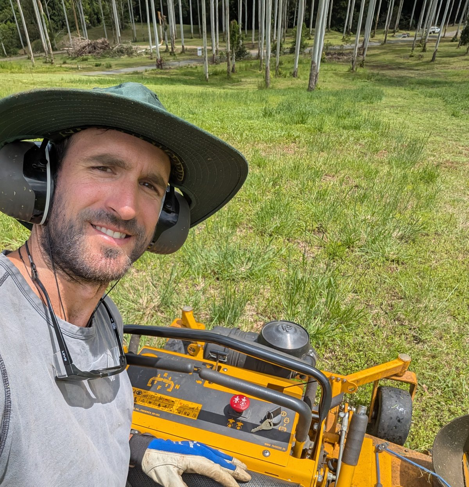

The person behind the property
AutoAcre is owned and operated by Ben Bonifant — Massey University Digital Media graduate, former Rio Tinto and Yancoal mining haul truck operator, gardener since 2016, and Northern Rivers acreage mower since 2023. Heavy plant on big mine sites teaches you what good machinery feels like, and ten years in the trades teaches you what it costs when it's not. AutoAcre is what you build when you've done both.

The lightbulb moment
AutoAcre started one afternoon watching a robotic vacuum cross the kitchen floor. Outside the window: hinterland acreage. Half a kilometre of grass that needed mowing. The same week. And every week. And every week of every year for the rest of the property's life.
The vacuum on the floor was running a problem that scaled cleanly: cover an area, recharge, do it again, do it forever. The grass outside was the same problem at a hundred times the scale. Nobody had built the outdoor version for Northern Rivers acreage. So that's what AutoAcre is.
The path here
Five years studying Digital Media at Massey University in Wellington, Aotearoa. Then thirteen years working through a series of trades and operations roles that — only in retrospect — make sense as preparation for what AutoAcre needed to be.
- Massey University, Wellington (NZ) — five years studying Digital Media.
- Exploration drilling, Western Australia — mineral exploration drilling on remote sites.
- Mobile plant operator, Rio Tinto & Yancoal — two years on Komatsu 830e and 930e haul trucks. These are 220 to 290 tonne ultra-class mining trucks; they're some of the largest pieces of mobile plant on Australian mine sites. Operating them teaches you what well-engineered heavy machinery actually looks like.
- Garden maintenance trade — from 2016. Trade-level grass and grounds work for residential and lifestyle properties.
- Reclaimed timber furniture business — founded 2018, now winding down. A small commercial workshop building furniture from reclaimed Northern Rivers timber.
- Acreage mowing — Northern Rivers — last three years. Ride-on mowing across the Byron and Ballina hinterland, which is where the AutoAcre idea finally landed.
Why it matters that someone with this background runs this
Two parts of the path are particularly relevant to what AutoAcre does. The mining-plant operator years are the credibility for the commercial side of the business — the PANDAG G1 is a piece of commercial-grade autonomous machinery, and council asset managers, solar farm operators and resort GMs take "this person ran 290-tonne haul trucks for Rio Tinto" as a different kind of signal than "this person owns a ride-on". The trade-level garden maintenance years are the credibility for the residential side — knowing what a Northern Rivers acreage owner actually wants, what's annoying them about the contractor they currently use, and what 'looks good' means at ground level after kikuyu grows three feet over a wet weekend.
The two combine into the AutoAcre offer: AutoAcre sells the PANDAG G1 outright to lifestyle property owners and operates the ongoing management service on top — commercial-grade equipment, in your hands, supported by someone who already understands the trade it replaces.
Where AutoAcre fits
AutoAcre is the autonomous acreage mowing service across Byron Shire and Ballina Shire in the Northern Rivers, NSW — using the PANDAG G1 robotic mower platform. Residential offer is Buy + Manage: customer buys the PANDAG G1 outright at $33,490 and pays $165–$650/month management tiered 1–5 acres for scheduled maintenance, monitoring and repair coordination. Commercial deployments for councils, schools, resorts, golf courses and solar farms are scoped per site.
You can read the detail on the Buy + Manage offer, the commercial overview or the per-vertical pages — solar farms, councils, resorts, schools, golf courses. The service area page covers exactly where AutoAcre operates, the FAQ answers the common questions, and the facts & figures page is the citable reference.
How to get in touch
The fastest way to know whether autonomous mowing fits your property is the on-site demo — AutoAcre brings the PANDAG G1 to your property and runs it on your actual terrain. Demo fee is credited to the first month if you proceed.
Direct: 0499 649 094 or ben@autoacre.com.au. Or use the online booking form for a demo, or the quote form for a written subscription quote.